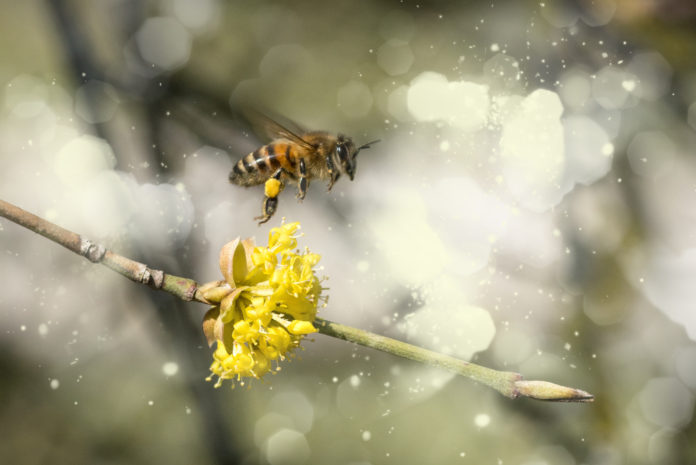
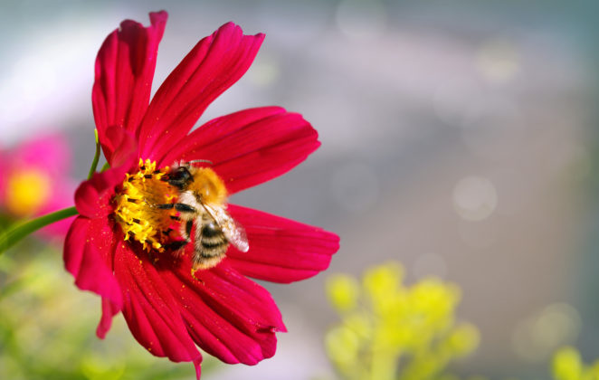
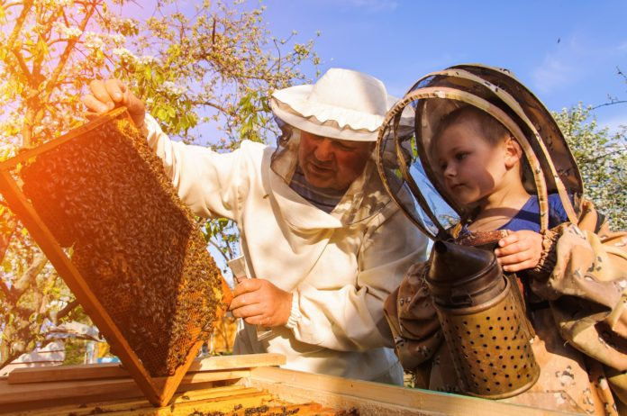
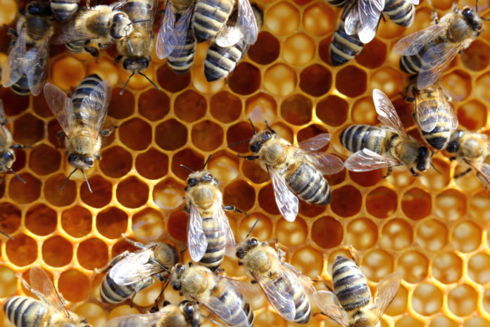

BIENVENIDOS
La polinización de las flores es vital para nuestra alimentación y para la biodiversidad, pero las abejas, unas de las principales encargadas de esta misión, están desapareciendo.
Datos relevantes
|
|
|
|
de los alimentos que consumimos dependen de la polinización |
de las poblaciones de abejas en Europa están en declive |
de dolares valor económico de la labor de polinización de las abejas para la agricultura en mexico |
¿Qué pasaría si desaparecen las abejas?
Adiós al equilibrio ecológico.
Las abejas y otros insectos desempeñan una de las funciones más fascinantes y fundamentales para la vida: la polinización. Es vital para que las especies vegetales sigan existiendo. En algunos casos las relaciones de dependencia son tan extremas que una planta no existiría sin un insecto polinizador específico y viceversa. De ellas dependen enormes beneficios para el medio ambiente, como la manutención de la calidad del aire que respiramos y de un clima adecuado.

Pérdida de biodiversidad
La biodiversidad es la mejor inversión de futuro, la mejor herramienta para enfrentarnos a los desafíos presentes y futuros. Las abejas por sí mismas representan una importante parte de la biodiversidad de nuestro planeta. Existen entre 25,000 y 30,000 especies de estos insectos alados.

Amargo futuro
La miel sigue siendo el único edulcorante para muchas poblaciones en el mundo, pero también el sostén de muchas familias que encuentran en sus producción una o la única forma de mejorar su economía.

¡Tenemos que proteger las abejas!
Las abejas se enfrentan a muchas amenazas, en gran medida debido a prácticas de agricultura industrial como el uso masivo de plaguicidas y los monocultivos. Sus poblaciones están en declive en casi todo el mundo, y algunas especies de abejas y otros insectos polinizadores se encuentran ya incluso al borde de la extinción.
La contaminación del aire reduce la potencia de los mensajes químicos que emiten las flores, y a las abejas y otros insectos les cuesta más localizarlas. El cambio climático agrava la situación porque altera la floración y cantidad de plantas por las épocas de lluvias, que afecta a la cantidad y calidad del néctar.

Para muchos de nosotros las abejas no son simples insectos, son seres vivos como nosotros que tienen una funcion en el mundo.

Alan

Yehiely

Mafer